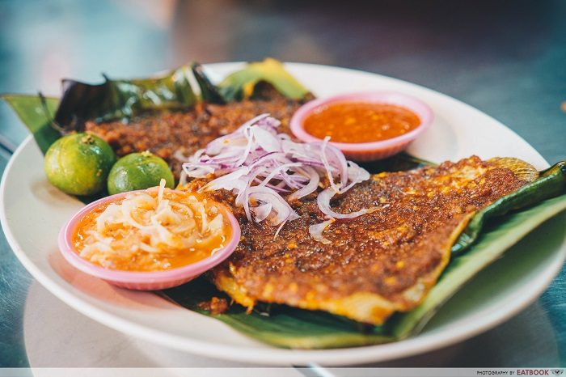

Chicken Rice

Description
Sambal stingray, also known as spicy banana leaf stingray and by the Malay name ikan bakar, is a Malaysian/Singaporean seafood dish. Prepared by barbecuing stingray, it is served with sambal paste atop. Sambal stingray can be easily purchased at hawker centers in both Malaysia and Singapore.
Ingredients
- Chicken
- Rice
- Chilli Sauce
Steps
- Cook the chicken
- Cook the rice
- Enjoy!